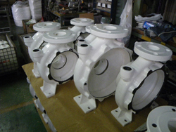
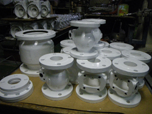
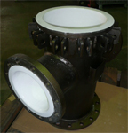
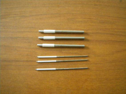
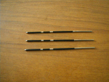
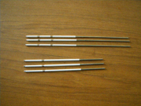
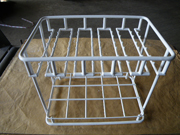
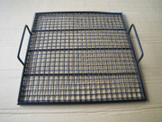
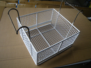

●ナイロンコーティングとは
金属などの基材表面にナイロン（ポリアミド）樹脂を被覆し、耐摩耗性・耐食性・絶縁性などの 機能を付与する表面処理です。
●ナイロンコーティング加工方法
流動浸漬法、静電塗布法の2工程で実施しています。
●色
白、黒、グレーに対応、その他の色に関しましても調合で対応可能です。お問い合わせください。
●加工可能な大きさ
φ1.5の小さいものから、900×900×900ｍｍまで対応。
配管に関しては ～2800mmまで対応(2分割)します。
詳細は当社にご相談を
●代表製品
ポンプ、バルブ、送風機
赤水防止や腐食防止としてナイロンコーティングは優れた塗膜性能があります。
密着性、耐磨耗性、耐薬品性、耐海水性も良く。食品衛生法にも適合しています。
弊社ではポンプ、バルブ、送風機メーカーに45年の実績があります。



カソードパイプ(電解バリ取り機の部品)
ステンレスパイプの一部にナイロンコーティングを施した電解バリ取り機用の電極部品です。 複雑な形状を持つ部品内部のバリ除去に使用されます。当社では、お客様からご支給 いただいた図面をもとに、ステンレスパイプの材料手配から加工、コーティングまで一貫して 対応しています。多品種・小ロット、短納期にも対応可能です。



洗浄かご
ナイロンコーティングを施した洗浄かごは、アルカリ洗浄液に対する耐薬品性と乾燥炉にも 対応できる耐熱性を備えています。また、被洗浄物への傷付きを抑え、製品保護にも役立ちます。


